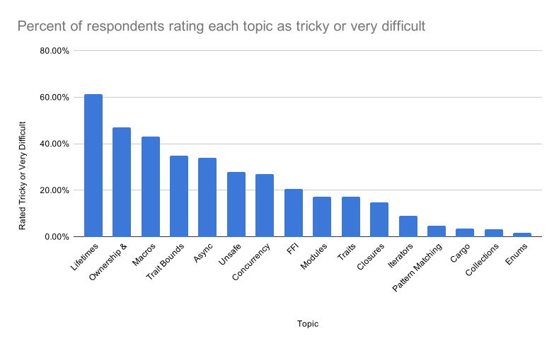
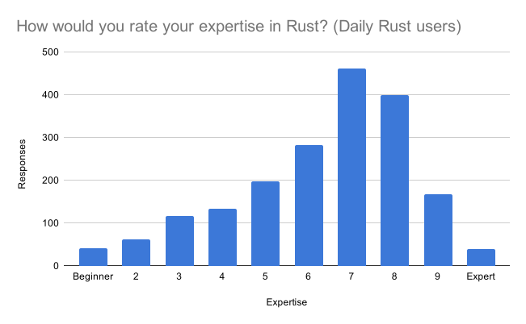

Greetings Rustaceans!
Another year has passed, and with it comes another annual Rust survey analysis! The survey was conducted in the second half of September 2020 over a two-week period. We’d like to thank everyone who participated in this year’s survey with a special shout-out to those who helped translate non-English responses.
Without further ado, let’s dive into the analysis!
Survey Audience
The survey was available in 14 different languages and had a record 8,323 total responses.
Here's the distribution of languages across the responses:
- English: 75.0%
- Simplified Chinese: 5.4%
- Russian: 5.3%
- German: 4.0%
- French: 2.7%
- Japanese: 2.2%
- Korean: 1.2%
- Traditional Chinese: 1.1%
- Spanish: 1.0%
- Portuguese: 0.7%
- Italian: 0.6%
- Swedish: 0.5%
- Vietnamese: 0.1%
- Polish: 0.1%
83.0% of respondents said they used Rust (an all time high) while 7% said they had used Rust in the past but no longer do. When asked why they had stopped using Rust, the largest group (35%) said they just hadn’t learned it yet (presumably from lack of time), followed by those whose company was not using Rust (34%) and those who said switching to Rust would “slow them down” compared to their current language of choice (19%).
Stability
While Rust itself has always had a strong stability guarantee, stability often means more than just ensuring users’ code doesn’t break when compiled with a new version of the compiler. Rust in 2020 has largely been about cleaning up and stabilizing features and initiatives that were already under way. While this work is not nearly completed, respondents have noted that the stability of Rust in general has been improving.
First, we’d like to make a shout out to the rust-analyzer and IntelliJ Rust plugin projects which both enjoy relatively happy user bases. Nearly 3/4ths of all respondents noted that they saw at least some improvement in the IDE story, but users of rust-analyzer and IntelliJ were especially happy with 47% of rust-analyzer users noting “a lot of improvement” while 40% of IntelliJ users said the same.
In addition to improvements in the IDE experience, the number of users who are relying on a nightly compiler at least part of the time continues to drop - down to 28% compared with last year’s 30.5% with only 8.7% of respondents saying they use nightly exclusively. When asked why people are using nightly the largest reason was to use the Rocket web framework which has announced it will work on the stable version of Rust in its next release. The next largest reason for nightly was const generics, but with a minimal version of const generics reaching stable, we should see less of a reliance on nightly for this feature.

It’s worth noting that a decent percentage of users who use nightly do so out of habit because “nightly is stable enough”. When asked what broke people’s code most often, by far the largest answer was the introduction of new warnings to a code base where warnings break the build (which is not part of Rust’s stability guarantee though Rust is designed so that adding new warnings never breaks your dependencies). Since we rely on nightly testing to catch regressions, this is a very good sign: nightly is stable enough to be useful while still allowing for continual changes. A shout-out to the Rust infrastructure, compiler, and libs teams for doing such a good job of ensuring that what lands in the nightly compiler is already fairly stable!
Who’s using Rust?
Rust continues to make inroads as a language used for production with roughly 40% of respondents that work in software noting that they use Rust at their day job. Additionally, the future of Rust on the job is bright with nearly half of those who knew saying that their employer planned to hire Rust developers in the next year.

The seemingly largest change in those using Rust seems to be students with a much larger percentage (~15% vs ~11% last year) of the respondents answering that they don’t use Rust at work because they’re students or software hobbyists and therefore don’t have a job in software.
Additionally, the use of Rust at respondents' workplaces seems to be getting bigger with 44% of respondents saying that the amount of Rust at work was 10,000 lines of code or more compared to 34% last year.

Improving Rust
While Rust usage seems to be growing at a healthy pace, the results of the survey made it clear that there is still work to be done to make Rust a more appropriate tool for many people’s workflows.
C++ Interop
Interestingly, C++ was the most requested language for better interop with Rust, with C and Python in second and third place. Improved C++ interop was especially often mentioned as a way to improve Rust usage specifically at work. In fact, for users who work on large codebases (100,000 lines of code or larger), C++ interop and — unsurprisingly — compile times were the most cited ways to improve their Rust experience.

Improved Learnability
When asked how to improve adoption of Rust, many cited making Rust easier to learn with 15.8% of respondents saying they would use Rust more if it were “less intimidating, easier to learn, or less complicated”. Additionally when directly asked how people think we can improve adoption of Rust, the largest category of feedback was documentation and training.
When we asked respondents to rate their expertise in Rust, there was a clear peak at 7 out of 10. It’s hard to say how this compares across languages but it seems notable that relatively few are willing to claim full expertise. However, when compared with last year, the Rust community does seem to be gaining expertise in the language.

We also asked about the difficulty of specific topics. The most difficult topic to learn according to survey results is somewhat unsurprisingly lifetime management with 61.4% of respondents saying that the use of lifetimes is either tricky or very difficult.

It does seem that having C++ knowledge helps with 20.2% of respondents with at least some C++ experience noting lifetimes to be “very difficult” while 22.2% of those without C++ knowledge found the topic to be “very difficult”. Overall, systems programming knowledge (defined as at least some experience in C and C++), tends to make for more confident Rust users: those with systems programming experience rated themselves as 5.5 out of 10 on their Rust expertise, while those with experience in statically typed garbage collected languages like Java or C# rated themselves as 4.9 out of 10. Those with only experience in dynamically typed languages like Ruby or JavaScript rated themselves as 4.8 out of 10.
Unsurprisingly, the more often people use Rust, the more they feel they are experts in the language with 56.3% of those who use Rust daily ranking themselves as 7 or more out of 10 on how much of an expert they are on Rust compared with 22% of those who use Rust monthly.

Compile Times
One continuing topic of importance to the Rust community and the Rust team is improving compile times. Progress has already been made with 50.5% of respondents saying they felt compile times have improved. This improvement was particularly pronounced with respondents with large codebases (10,000 lines of code or more) where 62.6% citing improvement and only 2.9% saying they have gotten worse. Improving compile times is likely to be the source of significant effort in 2021, so stay tuned!
Library Support
In general, respondents seemed pleased with the growing library support in the Rust ecosystem with 65.9% of respondents saying they had seen at least some improvement and only 4.9% saying they hadn't seen any improvement. When asked what type of library support was missing most, GUI programming was the overwhelming answer with only 26.9% of respondents noting that this was an area of improvement in the last year.
Additional topics for improvement include maturing the async programming story, more libraries for specific tasks not already covered by the crates.io ecosystem, and more "blessed" libraries for common tasks.
Community
Ways that the Rust community could improve varied but were highlighted by two popular points. First, improving the state of the Rust community for those who do not wish to or cannot participate in English. There does not seem to be a particular language that is especially underserved with Russian, Mandarin, Japanese, Portuguese, Spanish and French coming up frequently.
Additionally, many said that having large corporate sponsors in the Rust community will make it easier for them to make the case for using Rust at work.
Another interesting find was that Europe seemed by far to be the most favored place for holding a Rust conference with all parts of Europe (West, East, North, South, and Central) all having more than 14% of respondents saying they would be interested in attending a conference there with Western Europe getting the highest percentage (26.3% of respondents). The only other region in the same ballpark was the United States with 21.6% of respondents saying they’d be interested in a conference located there.
Getting Excited for Rust’s Future
Generally, respondents seemed to have a positive picture not only for how Rust has improved over the last year but for the year to come. In particular, many noted their excitement for new features to the language such as const generics and generic associated types (GATs) as well as the 2021 edition, improvements to async, the Bevy game engine, more adoption of Rust by companies, WebAssembly and more!
Here’s to an exciting 2021! 🎉🦀